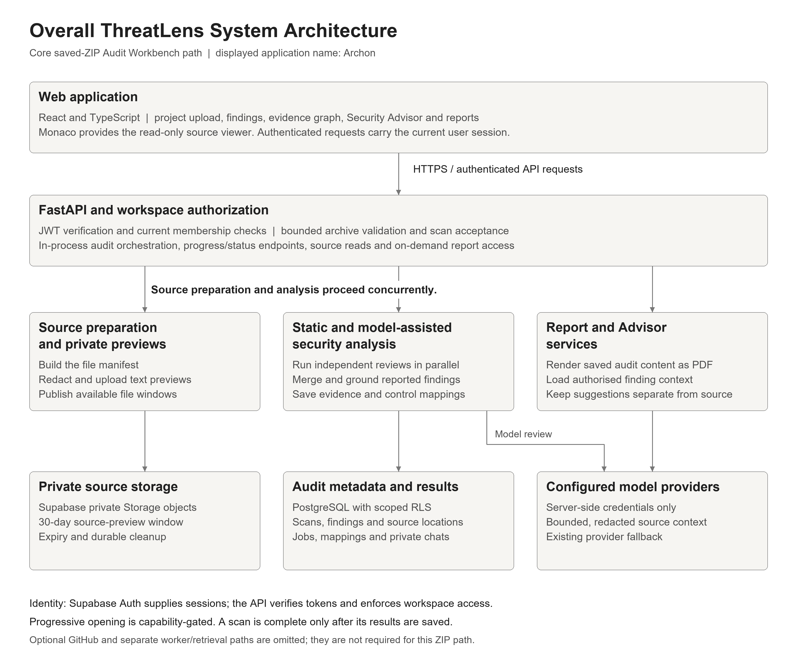
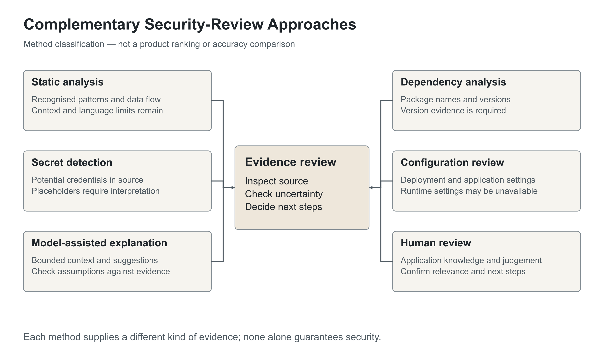
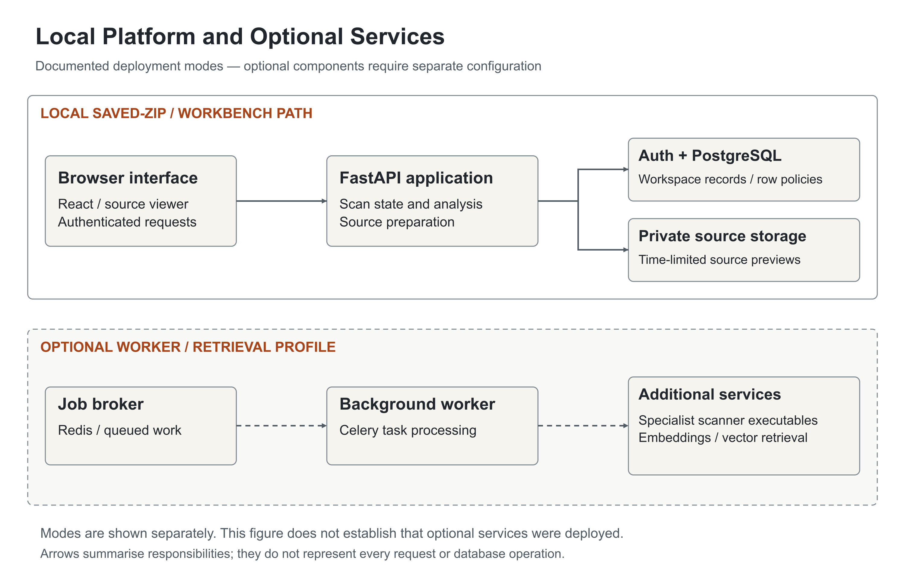
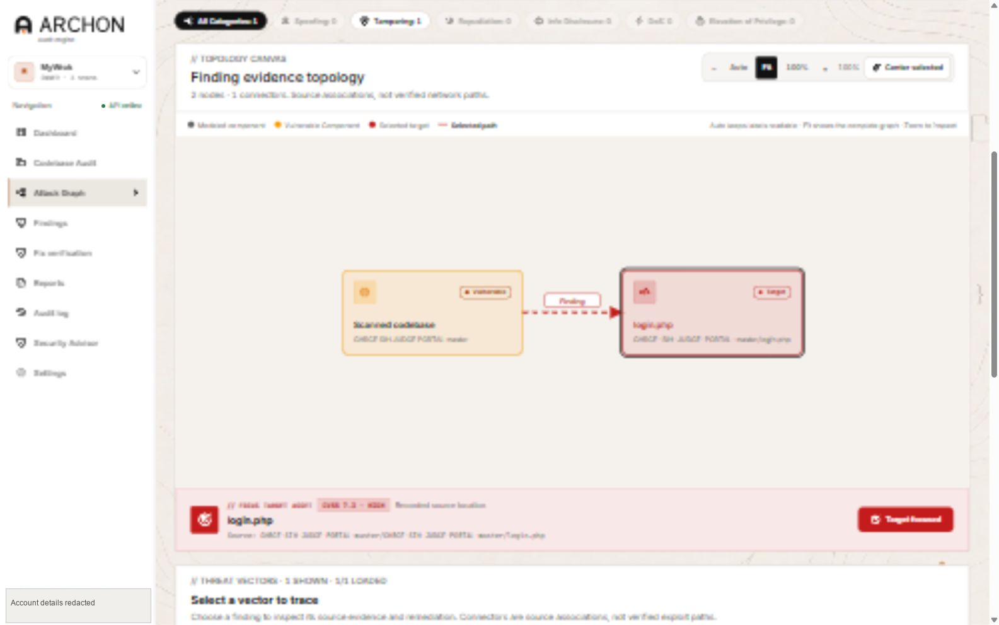
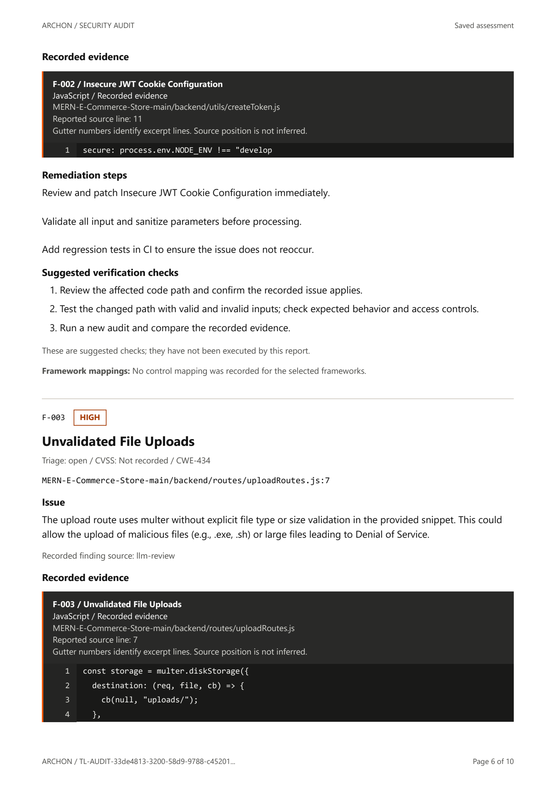
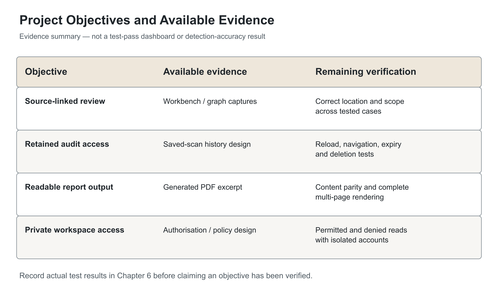
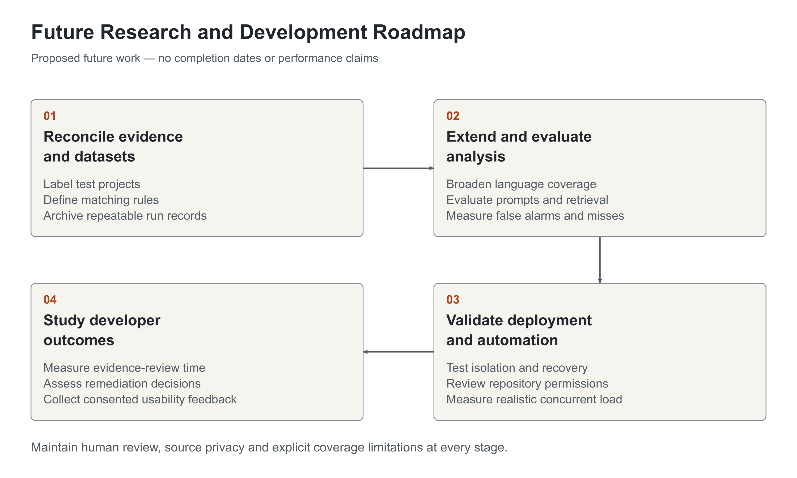

Figure 3.1 — Research and Development Workflow
Place after Section 3.1 Research Design and Workflow.

Figure 3.1: Research and Development Workflow.
Place after Section 1.8 Main Contributions.

Figure 1.1: Overall Architecture of ThreatLens.
Place after Section 2.8 Comparison with Existing Security Assessment Tools.

Figure 2.1: Classification of Security-Review Approaches.
Place after Section 3.1 Research Design and Workflow.
Figure 3.1: Research and Development Workflow.
Place after Section 4.6 Background Processing and Deployment Modes.

Figure 4.1: Local Platform and Optional Worker Services.
Place after Section 5.10 Scan Visualization and Attack Graph.

Figure 5.1: Audit Workbench with Source Code and Finding Details.
Place after Section 5.10 Scan Visualization and Attack Graph.

Figure 5.2: Evidence-Based Graph of Security Findings.
Place after Section 6.4 Vulnerability Detection Results.

Figure 6.1: Generated Report with Recorded Evidence and Remedies.
Place after Section 7.2 Key Findings and Contributions.

Figure 7.1: Project Objectives and Available Evidence.
Place after Section 8.5 Extended Validation and User Studies.

Figure 8.1: Proposed Future Research and Development Roadmap.